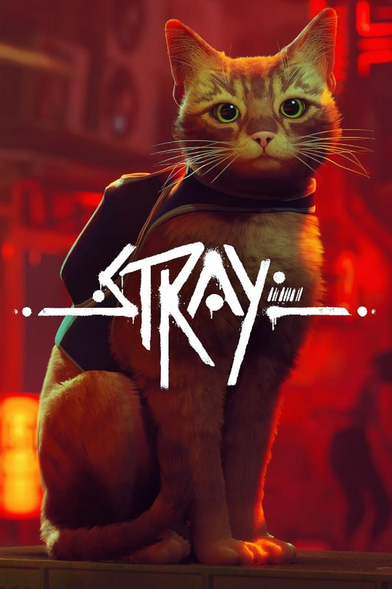
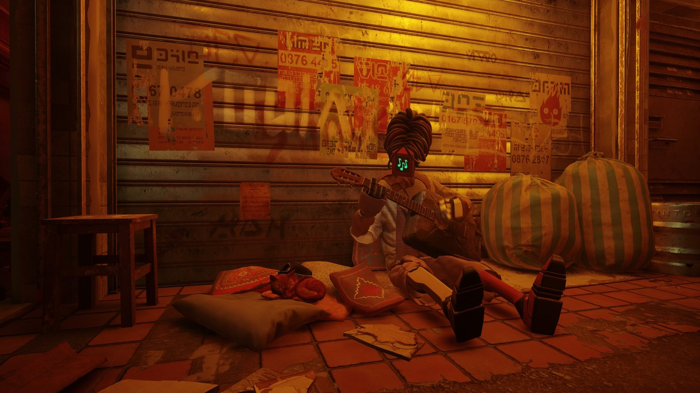
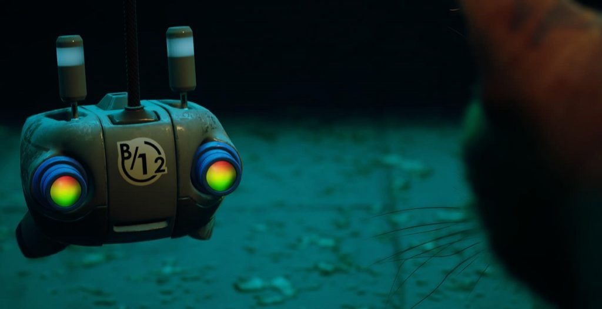
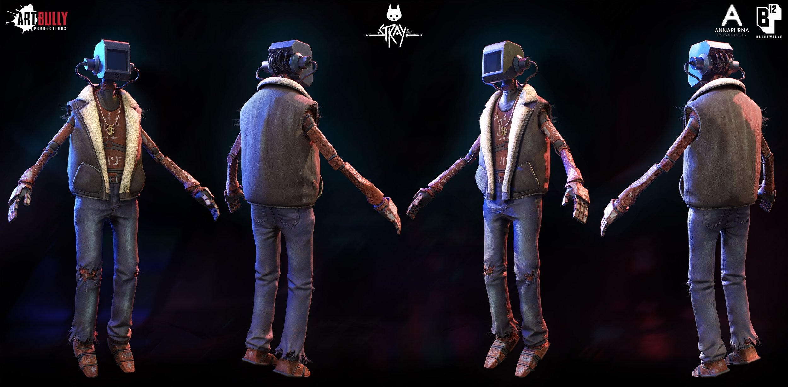
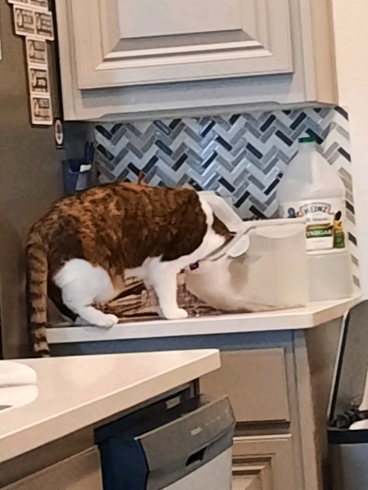
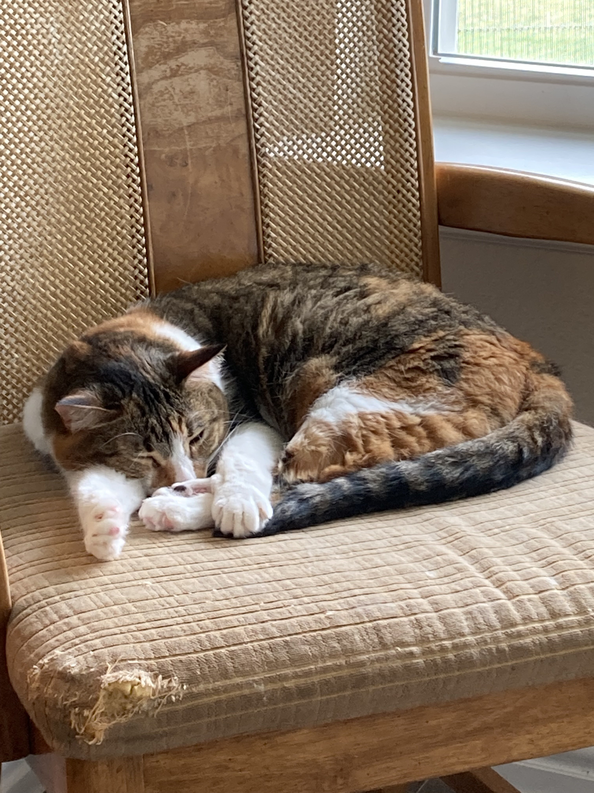

See a whole new world through the eyes of an orange tabby cat that falls into the walls of a cyborg city that is removed from all organic and human life forms. Stray is an adventure puzzle game that allows players to explore this underground city run by robots in search for a way back to the surface. Along the way, players can meow, purr, and scratch the furniture of the robots that have made this underground place their home.
 
Gameplay
Stray relies on environmental interaction and puzzle solving to continue progress through the story and game. Here’s a clip to demonstrate the some of the games main mechanics:
The main goal throughout the game is to find a way back to the surface so that you may be reunited with your fellow cats. Along the way, you meet B12, which is a small robot that helps you navigate the underground city by translating the robots language, hacking into various items to help progression, and even scanning the clues you find along the way, acting as your inventory.

However, B12 seems to be a little bit more than just a robot. Throughout the game, you have the opportunity to collect memories for B12 as you uncover the life it had before the underground city.
Throughout the game, there are plenty of moments that remind the player that you are a cat. You have the option to jump into the laps of the robots and nap there for however long you may please. You are also able to scratch on the carpet, furniture, and doors, and the kitty will occasionally meow, sending vibrations to the player's controller. Finally, you are able to knock over stacks of books and push things off of countertops, just for the fun of it.
Narrative
The way that Stray tells a story of an underground city run by cyborgs through the eyes of a cat is truly remarkable. From all of the little details that show you are truly playing as a cat, to all the easter eggs that have been embedded into the environment as long as you are curious enough to find them. Throughout the game, you get the chance to learn about each of the robots from talking with them to exploring their homes. You also slowly uncover what drove the robots to build underground and why they are so weary of returning to the surface. Stray’s narrative is told through the detailed environment and the player's willingness to explore.
The Reality Effect
I believe that the story of Stray well represents Barthes’ reality effect. This concept refers to the aspects of a story that make it feel realistic, even if they are not necessary for the plot. Details such as being able to meow or scratch on the furniture are not necessary to the overall plot of Stray but greatly increase how players are immersed in the story. These small gameplay details show the in-depth environment that developers have built to help your players truly believe that they are a part of this world.
Audio
According to an interview with the sound designers of Stray, building the sounds of the Dead City involved gathering components of city sounds from Japan, France, and Korea and removing the human elements. Then, some of these tones and sounds were altered to invoke a futuristic or mechanical feeling. Take a listen to this clip from the game and see what elements you can pick up on:
Next, take a listen to the music that is presented in different areas of the game:
This music evokes a feeling of curiosity and exploration. Stray is all about exploring your surroundings, solving puzzles, and learning about the world that you have found yourself in. Combining both the natural ambiance and the background music creates an immersive environment for players to feel as if the world they are traversing is real./br>
Visuals
The in-depth visuals of Stray build the environment of an underground city that is inept from any human or animal lifeforms, other than yourself. Check out this clip from one of the main cities in the game and pay close attention to how the robots have built this life for themselves.
The robots of this world dress themselves as if they are living in today's world, which brings a sense of relatability to the player. Although, this environment includes no natural light, neon colors, futuristic technology, and a language that is not of this world. Throughout the entirety of the game, the visuals remain consistent as you descend into this underground world and figure out a way to make it back out.

Ending (Spoilers!)
Towards the end of Stray, you make your way to the upper most point of the city thanks to the help of a robot named Momo, who is one of the last robots still curious about the surface. The upper city is presented as an abandoned train station combined with large control rooms. Further exploration shows that this space will open the large dome that leads to the outside for the entire city. However, to complete this override, our dear friend B12 makes the final sacrifice. Overwhelmed by the electricity in the panel, B12 falls unresponsive, but the city and all its residents are freed to the outside world. The cat we play as curls around B12 as you watch the city being opened. The game allows you to stay around our friend for as long as we please before finally reaching the outside ourselves.
Personal Conclusion
The attention to detail and the beautiful relationships you can create throughout Stray left me to love this game and wishing for more. There are so many activities you can complete for each of the robots as well as lots of things to discover in the environment to create a full story. After creating all of these connections and regaining the memories of B12, the ending left me sitting with our lifeless friend for much longer than I would like to admit. I was heartbroken but at the same time I thought it was beautiful. Thanks to this sacrifice, the entirety of this city no longer needs to live in fear of what is on the outside and our own character gets another opportunity of life. I highly recommend this game, especially if you own or enjoy cats.
 
Sources
Walden, Jennifer. “Behind the Purr-fect Sound of ‘Stray’ – with Sound Designers Yann van der Cruyssen and Raphaël Monnin” A Sound Effect. October 12, 2022.
Nonokolli. “Game Analysis: Why is Stray a good game and how it’s UX design helps?” Medium. November 20, 2023.
Stanley, Alyse. “‘Stray,’ a game in which you play as a cute cat, is a meow-sterpiece” The Washington Post. July 18, 2022.